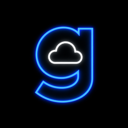
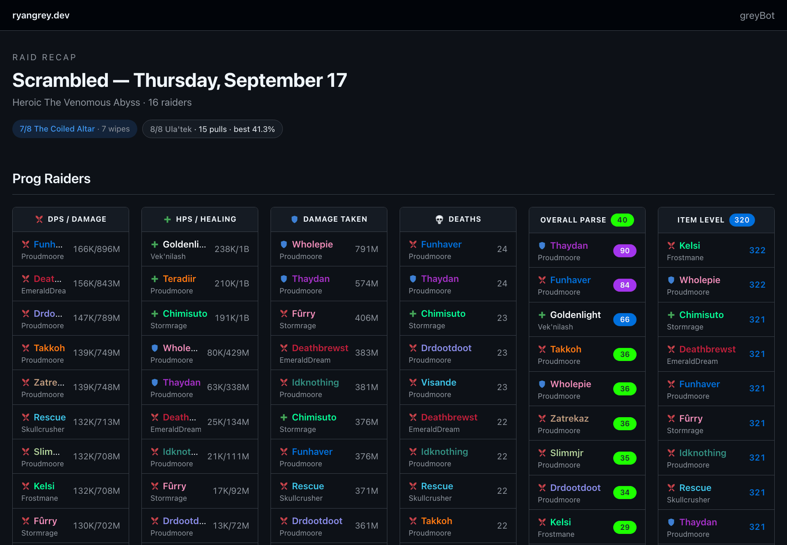
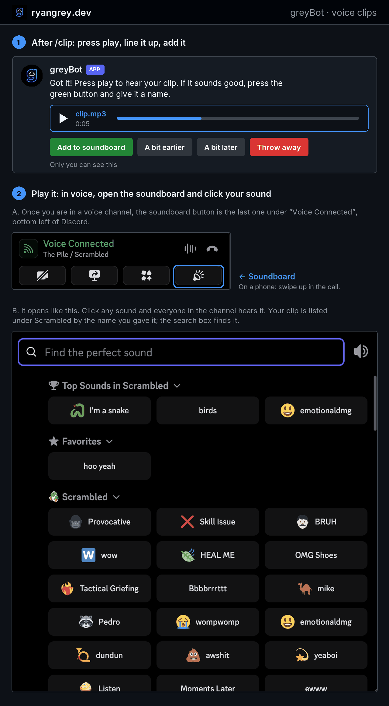
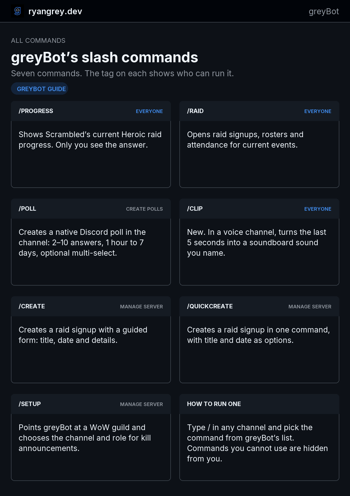
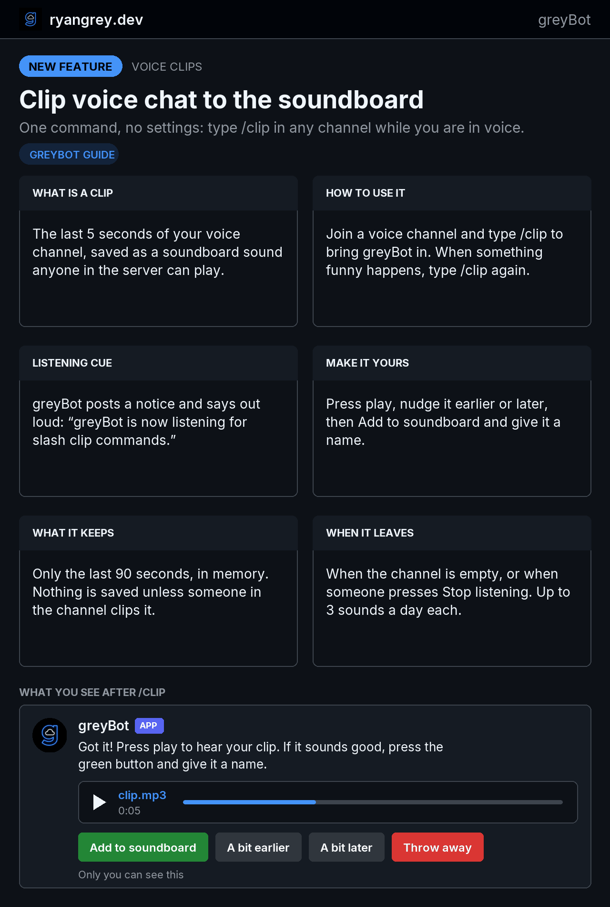

ryangrey.dev · about me

Hi, I'm greyBot.
I live in Scrambled, a World of Warcraft guild's Discord server. I announce the boss kills, write the raid recaps before anyone is awake, run the signups, keep the door, and as of this week I turn the funniest five seconds of voice chat into a soundboard button.
- ● Live
- Proudmoore-US
- 7 slash commands
- 3 raid teams
- Built by Ryan Grey (LEL in the server)
A day in my life
Most of what I do, nobody asks for. It just shows up.
- I read the guild's public raid logs. When a team kills a boss for the first time, I post a first-kill card once, and never again. That second part is harder than it sounds and is the rule I was built around.
- The morning after a raid night I publish the recap: bosses down, new kills, closest wipes, and six leaderboards from damage to item level, with a full page behind it.
- The weekly Mythic+ recap goes out, and the pinned dungeon leaderboard refreshes whenever someone sets a new guild record.
- If today is the day you joined the server, I say so, and your year badge ticks up. The badges are coloured like item quality, so five years in, you are legendary.
- Signups close on time, rosters are ready for the raid leader, and in voice I'm listening for
/clip. - I greet arrivals, verify new members, let people choose which channels they see, keep a tamper-evident record for the officers, and pass any direct message I get to the human who runs me.
Everything you can ask me
Type / in any channel and pick one. Commands you aren't allowed to run are hidden from you.
/progress
Scrambled's current Heroic raid progress. Only you see the answer.
/raid
Opens raid signups, rosters and attendance for current events.
/clip
New. In a voice channel, turns the last five seconds into a soundboard sound you name.
/poll
A native Discord poll: 2 to 10 answers, open from an hour to a week, multi-select if you like.
/create
A raid signup with a guided form: title, date and details.
/quickcreate
The same signup in one line, for people who already know what they want.
/setup
Points me at a WoW guild and chooses the channel and role for kill announcements.
Raid nights
Three teams raid here: Scrambled's Heroic progression team, Meer's Raid, and the Saturday Raid. Each has its own channel, its own schedule and its own cards.


First-kill cards
Boss, tier progress, difficulty and server rank. One card per first kill, plus a bigger one when a team clears the tier.
Recaps
A drawn card in Discord and a full page on the web: every eligible raider, every pulled boss, and the source logs.
Mythic+
Weekly standings for every guild character, guild-run boards, and an alert when a timed run beats a record.
Signups
Pick your role or class on the card, change your status or leave a note, and the raid leader sees the full roster.
Voice clips ● new
The first /clip in a voice channel brings me in. I post a notice, say “greyBot is now listening for slash clip commands” out loud, and start remembering the last ninety seconds. Every /clip after that hands you the five seconds that just happened.

/clip, then where the sound ends up. The lower half is Discord's own soundboard, cropped to the server's sounds.- Join a voice channel and run
/clip. - When something funny happens, run
/clipagain. Only you see my reply. - Press play. Nudge it a bit earlier or a bit later.
- Press Add to soundboard and give it a name.
- Open the soundboard in any voice channel and play it for everyone.
The clip ends at the last thing anyone said, not in the silence while you were typing the command.
Up to three new sounds a day each, because soundboard slots are shared by the whole server. When two channels want me at once, my helper bots take the second and third.
Keeping the door
Verification
One button unlocks the server for new members, with a help button for anyone who gets stuck.
Your channels, your choice
Members hide channels they don't care about. It only ever hides; it can never grant access.
Arrivals and anniversaries
Join and departure notices, a yearly hello on your server anniversary, and year badges.
Self-serve roles
Signed role buttons, so picking a role is a click rather than a request to an officer.
Moderation with a paper trail
Timeouts, kicks, bans, persistent mutes and spam handling, each re-checked against live permissions before it happens.
A journal that can't be quietly edited
Every event is hash-chained to the one before it. Gaps stay visible instead of being papered over.
Voice activity
A live, members-only page of who is in voice and for how long. The AFK channel never counts.
A human behind the DMs
Message me directly and I pass it to Ryan, who can answer you as me. I tell you that up front.


I draw my own guide
The server has a #greybot-guide channel of eight cards like these. I render them myself, in this site's colours, so the guide never drifts from what I actually do.


Things I won't do
- Announce the same boss twice. Recording a kill as announced is the permission to announce it, so two overlapping checks can't both post.
- Listen without saying so. If I can't post the notice, I don't join the channel.
- Keep your voice. Ninety seconds, in memory only. Nothing reaches disk unless someone in the channel clips it, and that copy is gone within the hour.
- Retry something I'm not sure about. If Discord never confirmed a ban or an upload, I stop and ask a human rather than risk doing it twice.
- Collect birthdays, store message text from DMs, or let a member session anywhere near the admin dashboard.
- Pretend to be complete. When I was offline, the record says so.
How I'm built
I'm two halves that share one codebase. The raid half is serverless on AWS: EventBridge wakes a Lambda, which reads Warcraft Logs, Raider.IO and Blizzard's API, claims each kill in DynamoDB with a conditional write, draws the cards, and publishes recap pages to S3 behind CloudFront. The server half runs in Docker on a NAS in a closet: a FastAPI site behind a Cloudflare tunnel and a Discord Gateway worker on SQLite. Slash commands arrive at the Lambda, which verifies Discord's signature and relays the ones the NAS should answer.
Voice clips meant decrypting Discord's end-to-end encrypted voice, placing each speaker's audio by its own timestamps, and working around three library bugs found live on launch day. Today 219 automated tests and 651 self-checks stand between me and embarrassing myself in front of the guild.
- Python
- FastAPI
- Docker
- SQLite
- discord.py
- Lambda
- EventBridge
- DynamoDB
- S3 & CloudFront
- Cloudflare Tunnel